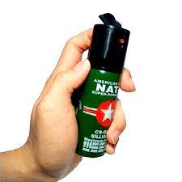
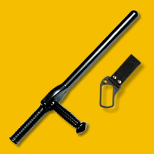

Gas pimienta: Es usado casi en su totalidad en el ámbito civil (ya que es una herramienta antidisturbios) debido a su facilidad de uso, consiste simplemente en presionar el atomizador de la lata y se liberará un compuesto químico difícil de disolver y capaz de causar un ardor muy intenso al agresor, al punto de causar ceguera temporal.

Armas de electrochoque : Los teaser de mano y pistolas teaser son los artefactos más comunes en esta categoría, funcionan provocando descargas eléctricas en el tejido muscular, lo cual produce una serie de contracciones musculares que paralizarán a quien le sean descargadas al punto de tirar a la persona al suelo, el teaser de mano, para que sea efectivo, se debe impactar contra una zona descubierta del cuerpo; la pistola teaser tiene dos electródos que son disparados con gran impulso, asi que son capaces de traspasar algunas prendas de vestir medianamente delgadas. Ambos son altamente efectivos pero (pricipalmente la pistola teaser) son algo peligrosos. Granadas aturdidoras: Son granadas que al accionarse despliegan un destello capaz de cegar al enemigo, lo desorienta y afecta seriamente sus capacidades de combate. No es letal pero no es un arma pensada para defenderse; Se utiliza mayormente en CQC (combate en espacios cerrados) durante las intervenciones policiales o militares antes de entrar a una habitación donde se sabe que hay actividad hostil, se lanza la granada aturdidora para incapacitar a las amenazas y se entra a la habitación para despejarla. Bastones: Es un arma mayormente usada por elementos de seguridad privados y policiales para frenar un ataque sin causar daño letal, a pesar de que estas armas si pueden llegar a matar. Se requiere cierto entrenamiento para emplear los bastones, especialmente si son tonfas, debido a las posibilidades que esta arma ofrece, simplemente golpear con la tonfa como si fuera un palo sería un gran desperdicio de sus capacidades.

Volver a la página principal
Ir a Chalecos antibalas